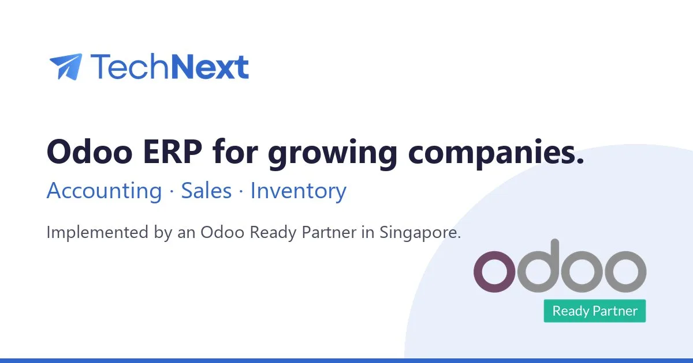
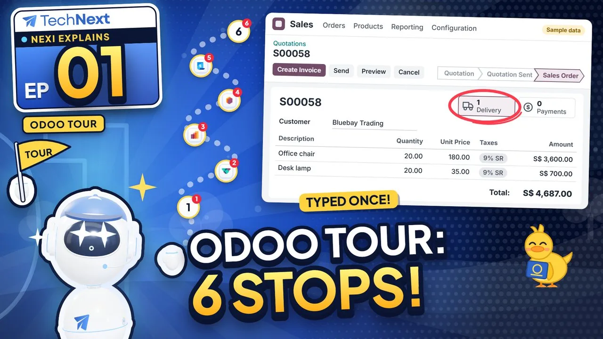
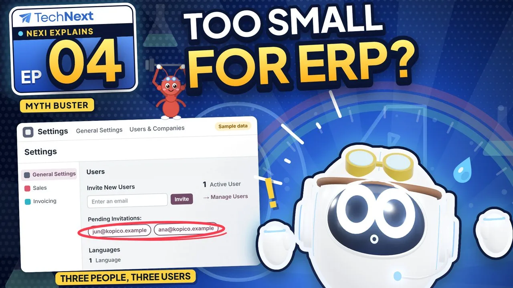

An adviser first, then the team that delivers.
TechNext is a solution provider and expert adviser for Odoo. We ask how the business runs, recommend what fits and say why, then our own experts set it up and stay on after go-live.
The offer today is focused: Odoo as a plug-in in your system. A company keeps its accounting software, ERP, POS or spreadsheets, and TechNext adds Odoo beside them, first for accounting and the BIR CAS books in the Philippines, then the full ERP when the company is ready for it.
The work runs from three places: the Singapore HQ, the main development and consulting hub in Taguig City, and the AI engineering hub in Ho Chi Minh City. The Odoo partnership is held by the Singapore company, TechNext Pte. Ltd.

Three pillars
Diagnose before we prescribe
We ask how the business runs, then recommend: what fits, what can wait, and what not to buy.
Own the whole solution
One accountable team from the advice to go-live and support. No hand-offs.
Expertise you can name
Advisers by domain, a reason behind every recommendation, standard Odoo first.


Sizes and layout, per format.
One real Odoo fact per post. The same logo row and footer every time.
Posts
Thumbnails, share card and decks

